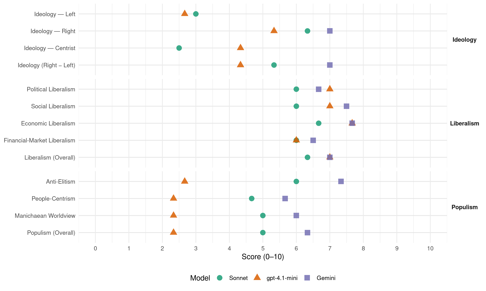

FPÖ (Austria, 2002)
manifesto_id 42420_200211
Get full text: This site shows derived annotations and short verbatim quotes only. The full manifesto text is © Manifesto Project / WZB — obtain it via manifesto-project.wzb.eu using the manifesto_id above.
Headline scores
| Dimension | Sonnet | gpt-4.1-mini | Gemini |
|---|---|---|---|
| Populism (Overall) | 5.0 | 2.3 | 6.3 |
| Anti-Elitism | 6.0 | 2.7 | 7.3 |
| People-Centrism | 4.7 | 2.3 | 5.7 |
| Manichaean Worldview | 5.0 | 2.3 | 6.0 |
| Ideology (Right − Left) | 5.3 | 4.3 | 7.0 |
| Liberalism (Overall) | 6.3 | 7.0 | 7.0 |
| Political Liberalism | 6.0 | 7.0 | 6.7 |
| Social Liberalism | 6.0 | 7.0 | 7.5 |
| Economic Liberalism | 6.7 | 7.7 | 7.7 |
| Financial-Market Liberalism | 6.0 | 6.0 | 6.5 |
Evidence per dimension
Economic Liberalism
Gemini · score 8.0 · verified · chunk 1
“volle Liberalisierung des Strommarktes und mit 1. Oktober 2002 eine volle Liberalisierung des Gasmarktes”
Auf intensives Drängen der Freiheitlichen konnte bereits mit 1. Oktober 2001 eine volle Liberalisierung des Strommarktes und mit 1. Oktober 2002 eine volle Liberalisierung des Gasmarktes erreicht werden.
Gemini · score 7.0 · verified · chunk 2
“freier Wettbewerb auf dem Gas- und Strommarkt”
Verschärfung der Rechnungslegungsbestimmungen für Großvereine. … freier Wettbewerb auf dem Gas- und Strommarkt.
Gemini · score 8.0 · verified · chunk 3
“Privatisierung von Aufgaben, die nicht vom Staat”
Überprüfung der Staatsaufgaben. Privatisierung von Aufgaben, die nicht vom Staat besorgt werden müssen.
gpt-4.1-mini · score 8.0 · verified · chunk 1
“Vollliberalisierung des Strom- und Gasmarktes, Wettbewerbseffekt, Preissenkungspotential”
Auf intensives Drängen der Freiheitlichen konnte bereits mit 1. Oktober 2001 eine volle Liberalisierung des Strommarktes und mit 1. Oktober 2002 eine volle Liberalisierung des Gasmarktes erreicht werden.
gpt-4.1-mini · score 8.0 · verified · chunk 2
“Senkung der Lohnnebenkosten”
Von einer Vielzahl von Maßnahmen zur Entlastung der KMUs werden im folgenden nur die wichtigsten erwähnt, nämlich: Senkung der Lohnnebenkosten. Urlaubsaliquotierung (Urlaubsanspruch nur im Verhältnis zu der im Arbeitsjahr zurückgelegten Dienstzeit). Entfall des Postensuchtag bei Selbstkündigung.
gpt-4.1-mini · score 7.0 · verified · chunk 3
“Steuerreform in Richtung „Faire Steuern“”
Die FPÖ bekennt sich zu einer Steuerreform, die Arbeitnehmer und Wirtschaft gleichermaßen entlastet, den Wirtschaftsstandort Österreich stärkt, die Kaufkraft der Österreicherinnen und Österreicher erhöht und durch eine vermehrte Inlandsnachfrage den Gefahren der Arbeitslosigkeit wirksam begegnen kann.
Sonnet · score 7.0 · verified · chunk 1
“volle Liberalisierung des Strommarktes”
Auf intensives Drängen der Freiheitlichen konnte bereits mit 1. Oktober 2001 eine volle Liberalisierung des Strommarktes und mit 1. Oktober 2002 eine volle Liberalisierung des Gasmarktes erreicht werden.
Sonnet · score 6.0 · verified · chunk 2
“freier Wettbewerb auf dem Gas- und Strommarkt”
freier Wettbewerb auf dem Gas- und Strommarkt. Senkung der Betriebskosten von Wohnungen
Sonnet · score 7.0 · verified · chunk 3
“Privatisierung von Aufgaben, die nicht vom Staat”
Überprüfung der Staatsaufgaben. Privatisierung von Aufgaben, die nicht vom Staat besorgt werden müssen.
Financial-Market Liberalism
Gemini · score 7.0 · verified · chunk 1
“Finanzierung der Abfertigung durch Beitragsleistungen der Arbeitgeber im Rahmen eines Kapitaldeckungsverfahrens”
An Stelle des bisherigen leistungsorientierten Abfertigungssystems trat ein beitragsorientiertes System, in dem die Finanzierung der Abfertigung durch Beitragsleistungen der Arbeitgeber im Rahmen eines Kapitaldeckungsverfahrens erfolgt.
Gemini · score 6.0 · verified · chunk 2
“Schaffung einer nationalen Forschungsstiftung aus Mitteln der OeNB”
Schaffung einer nationalen Forschungsstiftung aus Mitteln der OeNB. Laufende verpflichtende Evaluierung sämtlicher Fördereinrichtungen des Bundes.
gpt-4.1-mini · score 6.0 · verified · chunk 1
“Privatisierung zum Schuldenabbau bei der ÖIAG, Einführung neuer Methoden des Controlling”
Privatisierung zum Schuldenabbau bei der ÖIAG. Zusammenführung von Ergebnis- und Ressourcenverantwortung im Haushaltsrecht. Dezentralisierung der Budgetverantwortung durch die sogenannte “Flexiklausel”.
gpt-4.1-mini · score 6.0 · verified · chunk 2
“Erhöhung der Abschlussprüferhaftung”
mehr Sicherheit bei der Geldanlage durch die Erhöhung der Abschlussprüferhaftung von 5 Mio. Schilling auf bis zu 20 Mio. Euro, die Einführung der externen Prüferrotation und die Strafbarkeit von Falschinformationen an den Aufsichtsrat.
Sonnet · score 6.0 · verified · chunk 1
“Privatisierung zum Schuldenabbau bei der ÖIAG”
Einführung neuer Methoden des Controlling und der Kostenrechnung. Entwicklung von Leistungskennzahlen… Privatisierung zum Schuldenabbau bei der ÖIAG.
Sonnet · score 6.0 · verified · chunk 2
“mehr Sicherheit bei der Geldanlage”
mehr Sicherheit bei der Geldanlage durch die Erhöhung der Abschlussprüferhaftung von 5 Mio. Schilling auf bis zu 20 Mio. Euro, die Einführung der externen Prüferrotation
Sonnet · score 6.0 · verified · chunk 3
“österreichischen Kapitalmärkte seien nach wie vor unterentwickelt”
Die österreichischen Kapitalmärkte seien nach wie vor unterentwickelt. Das Regulierungsumfeld (in Österreich) stelle mit seiner Schwerfälligkeit und Komplexität ein Hindernis für unternehmerische Aktivitäten dar.
Political Liberalism
Gemini · score 8.0 · verified · chunk 1
“Stärkung des freiheitlichen Rechtsstaates und den Ausbau der Mitwirkungsrechte der Bürger”
Diese Erneuerung ist gekennzeichnet vom Willen zur Eindämmung der Bürokratie, des Parteien- und Verbändeeinflusses, zur Stärkung des freiheitlichen Rechtsstaates und den Ausbau der Mitwirkungsrechte der Bürger.
Gemini · score 5.0 · verified · chunk 2
“ohne das Grundrecht auf Demonstrationsfreiheit zu gefährden”
das Vermummungsverbot für gewaltbereite Demonstranten dient dazu, Gewalt bei Demonstrationen zu bekämpfen, ohne das Grundrecht auf Demonstrationsfreiheit zu gefährden.
Gemini · score 7.0 · verified · chunk 3
“Verankerung der autochthonen Volksgruppen in einer Staatszielbestimmung”
Unter freiheitlicher Federführung ist es gelungen, durch nachstehende Maßnahmen wesentliche Besserstellung für die autochthonen Volksgruppen und Vertriebenen zu erreichen: Verankerung der autochthonen Volksgruppen in einer Staatszielbestimmung (Art. 8 B-VG) in der Bundeverfassung.
gpt-4.1-mini · score 7.0 · verified · chunk 1
“Einführung der Briefwahl, die verpflichtende Durchführung von Volksabstimmungen”
Unter freiheitlicher Federführung wurde ein umfangreiches Demokratiepaket erarbeitet, das insbesondere die Einführung der Briefwahl, die verpflichtende Durchführung von Volksabstimmungen bei erfolgreichen Volksbegehren, die von mindestens 15% der Stimmberechtigten unterschrieben wurden, sowie eine Ausdehnung der Rechte der Volksanwaltschaft und eine Objektivierung bei der Bestellung der Richter des Verfassungs- und Verwaltungsgerichtshofes vorsah.
gpt-4.1-mini · score 7.0 · verified · chunk 2
“Patientenrechte – erstmalige Verankerung der Patientenrechte”
Einführung der Gruppenpraxen – zur besseren Versorgung für Patienten im niedergelassenen ärztlichen Bereich. Center of Excellence im Bereich “Mental Health”. Familien-Hospizkarenz. Schaffung einer Agentur für Gesundheit und Ernährungssicherheit. Patientenrechte – erstmalige Verankerung der Patientenrechte für ganz Österreich in der Patientencharta.
gpt-4.1-mini · score 7.0 · verified · chunk 3
“Verwaltungsreformgesetz 2001”
Das Verwaltungsreformgesetz 2001 ist seit 20. April 2002 bzw. seit 1. August 2002 in Kraft. Das Gesetz befindet sich bereits zu 100% in Umsetzung.
Sonnet · score 7.0 · verified · chunk 1
“Stärkung der Direkten Demokratie”
Folgende Vorhaben haben sich die Freiheitlichen zum Ziel gesetzt… Stärkung der Direkten Demokratie. Erfolgreiche Volksbegehren, die von mindestens 15% der Stimmberechtigten unterstützt werden, sind verpflichtend einer Volksabstimmung zu unterziehen.
Sonnet · score 5.0 · verified · chunk 2
“Grundrecht auf Demonstrationsfreiheit”
das Vermummungsverbot für gewaltbereite Demonstranten dient dazu, Gewalt bei Demonstrationen zu bekämpfen, ohne das Grundrecht auf Demonstrationsfreiheit zu gefährden
Sonnet · score 6.0 · verified · chunk 3
“Stärkung der Unabhängigkeit”
Die UVS entscheiden in der Sache selbst. Stärkung der Unabhängigkeit. Ermöglichung von e-Government.
Liberalism (Overall)
Gemini · score 8.0 · verified · chunk 1
“volle Liberalisierung des Strommarktes und mit 1. Oktober 2002 eine volle Liberalisierung des Gasmarktes”
Auf intensives Drängen der Freiheitlichen konnte bereits mit 1. Oktober 2001 eine volle Liberalisierung des Strommarktes und mit 1. Oktober 2002 eine volle Liberalisierung des Gasmarktes erreicht werden.
Gemini · score 5.0 · verified · chunk 2
“freier Wettbewerb auf dem Gas- und Strommarkt”
Verschärfung der Rechnungslegungsbestimmungen für Großvereine. … freier Wettbewerb auf dem Gas- und Strommarkt.
Gemini · score 8.0 · verified · chunk 3
“Privatisierung von Aufgaben, die nicht vom Staat”
Überprüfung der Staatsaufgaben. Privatisierung von Aufgaben, die nicht vom Staat besorgt werden müssen.
gpt-4.1-mini · score 7.0 · verified · chunk 1
“Vollliberalisierung des Strom- und Gasmarktes, Wettbewerbseffekt, Preissenkungspotential”
Auf intensives Drängen der Freiheitlichen konnte bereits mit 1. Oktober 2001 eine volle Liberalisierung des Strommarktes und mit 1. Oktober 2002 eine volle Liberalisierung des Gasmarktes erreicht werden.
gpt-4.1-mini · score 7.0 · verified · chunk 2
“Senkung der Lohnnebenkosten”
Von einer Vielzahl von Maßnahmen zur Entlastung der KMUs werden im folgenden nur die wichtigsten erwähnt, nämlich: Senkung der Lohnnebenkosten. Urlaubsaliquotierung (Urlaubsanspruch nur im Verhältnis zu der im Arbeitsjahr zurückgelegten Dienstzeit). Entfall des Postensuchtag bei Selbstkündigung.
gpt-4.1-mini · score 7.0 · verified · chunk 3
“Steuerreform in Richtung „Faire Steuern“”
Die FPÖ bekennt sich zu einer Steuerreform, die Arbeitnehmer und Wirtschaft gleichermaßen entlastet, den Wirtschaftsstandort Österreich stärkt, die Kaufkraft der Österreicherinnen und Österreicher erhöht und durch eine vermehrte Inlandsnachfrage den Gefahren der Arbeitslosigkeit wirksam begegnen kann.
Sonnet · score 7.0 · verified · chunk 1
“Liberalisierung des Strom- und Gasmarktes”
Es wird weiters darauf zu achten sein, dass trotz der vollen Liberalisierung des Strom- und Gasmarktes die Endverbraucher tatsächlich eine volle Wahlfreiheit in Bezug auf den jeweiligen Stromhändler bzw. -verkäufer haben.
Sonnet · score 6.0 · verified · chunk 2
“freier Wettbewerb auf dem Gas- und Strommarkt”
freier Wettbewerb auf dem Gas- und Strommarkt. Senkung der Betriebskosten von Wohnungen
Sonnet · score 6.0 · verified · chunk 3
“Privatisierung von Aufgaben, die nicht vom Staat”
Überprüfung der Staatsaufgaben. Privatisierung von Aufgaben, die nicht vom Staat besorgt werden müssen.
Anti-Elitism
Gemini · score 8.0 · verified · chunk 1
“nicht die Durchführung von Strukturreformen, sondern dieses war darauf gerichtet, Millionenbeträge auf Kosten von Lehrstellensuchenden in parteinahe Kanäle fließen zu lassen”
Das Hauptaugenmerk der Sozialisten war - wie dies in der Folge durch den Euroteam-Skandal bestätigt wurde - nicht die Durchführung von Strukturreformen, sondern dieses war darauf gerichtet, Millionenbeträge auf Kosten von Lehrstellensuchenden in parteinahe Kanäle fließen zu lassen.
Gemini · score 7.0 · verified · chunk 2
“von den Sozialpartnern beherrscht wird”
Vereines für Konsumenteninformation, welcher derzeit – zum Schaden der Konsumenten durch die gegenseitige Blockade - von den Sozialpartnern beherrscht wird.
Gemini · score 7.0 · verified · chunk 3
“sozialistisch dominierte Bundesregierung hinterlassen hat”
Sozialpolitik war die Ausgangslage, welche die sozialistisch dominierte Bundesregierung hinterlassen hat, denkbar schlecht.
gpt-4.1-mini · score 3.0 · verified · chunk 1
“SPÖ und ÖVP nicht in der Lage, diesen Zustand zu beseitigen”
Trotz dieser Situation waren SPÖ und ÖVP nicht in der Lage, diesen Zustand zu beseitigen. UNSER ZIEL. Die FPÖ hat sich bereits im Jahr 1992 zum Ziel gesetzt, für alle Arbeitsverhältnisse, die auf einem privatrechtlichen Vertrag beruhen, einen Abfertigungsanspruch ab dem ersten Arbeitstag zu schaffen.
gpt-4.1-mini · score 3.0 · verified · chunk 2
“Diesen Zustand haben SPÖ und ÖVP zu verantworten”
Diese unkontrollierte Einwanderung hat einen Lohndruck und eine Verteuerung auf dem Wohnungsmarkt bewirkt und ist daher geeignet den sozialen Frieden zu gefährden. Diesen Zustand haben SPÖ und ÖVP zu verantworten, da sie über Jahre hinweg entweder keine oder nur unzureichende Maßnahmen gegen den Ausländerzuzug ergriffen haben.
gpt-4.1-mini · score 2.0 · verified · chunk 3
“Soziale Gerechtigkeit forcieren”
Soziale Gerechtigkeit forcieren. Die sozialen Errungenschaften und der hohe Sozialstandard in Österreich müssen gesichert, modernisiert und in ihrer Effizienz verbessert werden.
Sonnet · score 6.0 · verified · chunk 1
“Postenschacher und Kammerzwang, von Herrschaftsdenken”
Die Realverfassung Österreichs war gekennzeichnet durch Versteinerung und geprägt von Proporz und Besitzstandeswahrung, von Postenschacher und Kammerzwang, von Herrschaftsdenken und Machtausübung.
Sonnet · score 6.0 · verified · chunk 2
“sozialistisch dominierte Bundesregierung”
Die Ausgangslage, welche die sozialistisch dominierte Bundesregierung Ende 1999 hinterlassen hat, war dadurch gekennzeichnet
Sonnet · score 6.0 · verified · chunk 3
“sozialistisch dominierte Bundesregierung hinterlassen hat”
Im Bereich der Sozialpolitik war die Ausgangslage, welche die sozialistisch dominierte Bundesregierung hinterlassen hat, denkbar schlecht.
Ideology — Centrist
gpt-4.1-mini · score 4.0 · verified · chunk 1
“Ziel war weiters, eine Ausweitung der Beschäftigung sowie die Qualifizierung von Arbeit suchenden Jugendlichen”
Ziel war weiters, eine Ausweitung der Beschäftigung sowie die Qualifizierung von Arbeit suchenden Jugendlichen bei gleichzeitiger Förderung der Unternehmen zur Schaffung von Arbeitsplätzen.
gpt-4.1-mini · score 4.0 · verified · chunk 2
“Integration vor Neuzuzug”
Das Motto der Freiheitlichen lautet: “Integration vor Neuzuzug”. Um dies zu erreichen, wurden folgende Maßnahmen durchgesetzt: Einführung des Integrationsvertrages.
gpt-4.1-mini · score 5.0 · verified · chunk 3
“den Menschen im Mittelpunkt”
Entsprechend unserem Grundsatz, dass der Mensch im Mittelpunkt zu stehen hat, war und ist es uns ein besonderes Anliegen, den Menschen zu ermöglichen ihren letzten Lebensabschnitt in Würde verbringen zu können.
Sonnet · score 3.0 · verified · chunk 1
“Stärkung des freiheitlichen Rechtsstaates”
Diese Erneuerung ist gekennzeichnet vom Willen zur Eindämmung der Bürokratie, des Parteien- und Verbändeeinflusses, zur Stärkung des freiheitlichen Rechtsstaates und den Ausbau der Mitwirkungsrechte der Bürger.
Sonnet · score 2.0 · verified · chunk 2
“Interessen der Verbraucher einzusetzen”
hat es als Aufgabe angesehen, sich stärker für die Interessen der Verbraucher einzusetzen
Ideology — Left
gpt-4.1-mini · score 3.0 · verified · chunk 1
“Ziel war weiters, eine Ausweitung der Beschäftigung sowie die Qualifizierung von Arbeit suchenden Jugendlichen”
Ziel war weiters, eine Ausweitung der Beschäftigung sowie die Qualifizierung von Arbeit suchenden Jugendlichen bei gleichzeitiger Förderung der Unternehmen zur Schaffung von Arbeitsplätzen.
gpt-4.1-mini · score 2.0 · verified · chunk 2
“Senkung der Lohnnebenkosten”
Von einer Vielzahl von Maßnahmen zur Entlastung der KMUs werden im folgenden nur die wichtigsten erwähnt, nämlich: Senkung der Lohnnebenkosten. Urlaubsaliquotierung (Urlaubsanspruch nur im Verhältnis zu der im Arbeitsjahr zurückgelegten Dienstzeit).
gpt-4.1-mini · score 3.0 · verified · chunk 3
“Soziale Gerechtigkeit forcieren”
Soziale Gerechtigkeit forcieren. Die sozialen Errungenschaften und der hohe Sozialstandard in Österreich müssen gesichert, modernisiert und in ihrer Effizienz verbessert werden.
Sonnet · score 3.0 · verified · chunk 1
“1000 Euro Mindestlohn”
Über eine Viertelmillion unselbständig Vollerwerbstätige verdienen in Österreich weniger als 1.000 Euro… sollen arbeitsrechtliche Bestimmungen für alle Berufe einen Mindestlohn für Vollerwerbstätige festlegen
Sonnet · score 2.0 · verified · chunk 2
“Gleicher Lohn für gleichwertige Arbeit”
Wir wollen die Vereinbarkeit von Beruf und Familie für Frauen und Männer … gleichen Lohn für gleichwertige Arbeit
Sonnet · score 4.0 · verified · chunk 3
“Anhebung der Mindestlöhne im Rahmen von Kollektivvertragsvereinbarungen”
Verbesserung der Mißbrauchsbekämpfung durch Vernetzung der verschiedenen Sozialhilfesysteme der Länder im Interesse jener, die solidarische Hilfe wirklich benötigen. Anhebung der Mindestlöhne im Rahmen von Kollektivvertragsvereinbarungen.
Ideology (Right − Left)
Gemini · score 8.0 · verified · chunk 1
“die österreichischen Grenzkontrollen bis zur Schengenreife beibehalten werden”
die österreichischen Grenzkontrollen bis zur Schengenreife beibehalten werden.
Gemini · score 8.0 · verified · chunk 2
“Österreich kein Einwanderungsland wird”
Auch in Zukunft werden die Freiheitlichen darauf achten, dass Österreich kein Einwanderungsland wird und dass insbesondere Maßnahmen gegen die illegale Einwanderung gesetzt werden.
Gemini · score 5.0 · verified · chunk 3
“Sicherstellung eines effizienten Grenzschutzes durch Grenzgendarmerie”
gemischte Streifen im Rahmen des Schengen-Prozesses Sicherstellung eines effizienten Grenzschutzes durch Grenzgendarmerie. Strengere Strafen
gpt-4.1-mini · score 4.0 · verified · chunk 1
“Die damalige sozialistisch dominierte Koalition hat Arbeitsplätze und Schutz für sozial Bedürftige versprochen, aber tatsächlich steigende Arbeitslosenzahlen hingenommen”
Die damalige sozialistisch dominierte Koalition hat Arbeitsplätze und Schutz für sozial Bedürftige versprochen, aber tatsächlich steigende Arbeitslosenzahlen hingenommen, soziale Notlagen zunehmend verschärft und mehr Menschen in Armut gedrängt.
gpt-4.1-mini · score 5.0 · verified · chunk 2
“Integration vor Neuzuzug”
Das Motto der Freiheitlichen lautet: “Integration vor Neuzuzug”. Um dies zu erreichen, wurden folgende Maßnahmen durchgesetzt: Einführung des Integrationsvertrages.
gpt-4.1-mini · score 4.0 · verified · chunk 3
“Soziale Gerechtigkeit forcieren”
Soziale Gerechtigkeit forcieren. Die sozialen Errungenschaften und der hohe Sozialstandard in Österreich müssen gesichert, modernisiert und in ihrer Effizienz verbessert werden.
Sonnet · score 5.0 · verified · chunk 1
“Übergangsfristen im Bereich der Arbeitnehmerfreizügigkeit”
Siebenjährige Übergangsfristen im Bereich der Arbeitnehmerfreizügigkeit wurden bereits ausverhandelt… Ohne eine derartige Einschränkung der Arbeitnehmerfreizügigkeit wäre Österreich von einer massiven Zuwanderung betroffen gewesen
Sonnet · score 6.0 · verified · chunk 2
“Österreich kein Einwanderungsland wird”
werden die Freiheitlichen darauf achten, dass Österreich kein Einwanderungsland wird
Sonnet · score 5.0 · verified · chunk 3
“Strengere Strafen beim Tatbestand der Schlepperei”
Sicherstellung eines effizienten Grenzschutzes durch Grenzgendarmerie. Strengere Strafen beim Tatbestand der Schlepperei.
Ideology — Right
Gemini · score 8.0 · verified · chunk 1
“die österreichischen Grenzkontrollen bis zur Schengenreife beibehalten werden”
die österreichischen Grenzkontrollen bis zur Schengenreife beibehalten werden.
Gemini · score 8.0 · verified · chunk 2
“Österreich kein Einwanderungsland wird”
Auch in Zukunft werden die Freiheitlichen darauf achten, dass Österreich kein Einwanderungsland wird und dass insbesondere Maßnahmen gegen die illegale Einwanderung gesetzt werden.
Gemini · score 5.0 · verified · chunk 3
“Sicherstellung eines effizienten Grenzschutzes durch Grenzgendarmerie”
gemischte Streifen im Rahmen des Schengen-Prozesses Sicherstellung eines effizienten Grenzschutzes durch Grenzgendarmerie. Strengere Strafen
gpt-4.1-mini · score 5.0 · verified · chunk 1
“Wir Freiheitlichen stehen in allen Belangen voll zur Genfer Flüchtlingskonvention”
Wir Freiheitlichen stehen in allen Belangen voll zur Genfer Flüchtlingskonvention. In diesem Zusammenhang treten wir aber auch dafür ein, dass nach Möglichkeit Hilfe vor Ort geleistet wird.
gpt-4.1-mini · score 7.0 · verified · chunk 2
“Verringerung des Ausländerzuzuges”
Die Zielsetzung der Freiheitlichen mußte daher eine Verringerung des Ausländerzuzuges sein, um Österreich nicht zu einem Einwanderungsland zu machen. Wir Freiheitlichen treten dafür ein, dass die Integration bereits in Österreich lebender Ausländer erfolgreich vonstatten geht.
gpt-4.1-mini · score 4.0 · verified · chunk 3
“Aufhebung menschenrechtswidriger BENEŠ-Dekrete”
Aufhebung menschenrechtswidriger BENEŠ-Dekrete und AVNOJ-Bestimmungen und eine Klärung der Vermögensrestitution.
Sonnet · score 6.0 · verified · chunk 1
“Sofortige Abschiebung ausländischer Drogendealer”
Stopp jeglicher Liberalisierung von Drogen. keine Freigabe von ‘weichen Drogen’… Sofortige Abschiebung ausländischer Drogendealer. Keinerlei Nachsicht (‘Zero-Tolerance’) gegenüber Drogendealern.
Sonnet · score 7.0 · verified · chunk 2
“Österreich kein Einwanderungsland wird”
werden die Freiheitlichen darauf achten, dass Österreich kein Einwanderungsland wird und dass insbesondere Maßnahmen gegen die illegale Einwanderung gesetzt werden
Sonnet · score 6.0 · verified · chunk 3
“Strengere Strafen beim Tatbestand der Schlepperei”
Sicherstellung eines effizienten Grenzschutzes durch Grenzgendarmerie. Strengere Strafen beim Tatbestand der Schlepperei.
Manichaean Worldview
Gemini · score 7.0 · verified · chunk 1
“soziale Notlagen zunehmend verschärft und mehr Menschen in Armut gedrängt”
Die damalige sozialistisch dominierte Koalition hat Arbeitsplätze und Schutz für sozial Bedürftige versprochen, aber tatsächlich steigende Arbeitslosenzahlen hingenommen, soziale Notlagen zunehmend verschärft und mehr Menschen in Armut gedrängt.
Gemini · score 6.0 · verified · chunk 2
“gegen Große, Mächtige und wohlorganisierte Firmen”
sich stärker für die Interessen der Verbraucher einzusetzen und sie bei der Durchsetzung ihrer berechtigten Ansprüche gegen Große, Mächtige und wohlorganisierte Firmen und Organisationen zu unterstützen.
Gemini · score 5.0 · verified · chunk 3
“bisherige ungerechte und ineffiziente sozialistische System”
und die das bisherige ungerechte und ineffiziente sozialistische System, bei dem die Institutionen
gpt-4.1-mini · score 2.0 · verified · chunk 1
“Die damalige sozialistisch dominierte Koalition hat Arbeitsplätze und Schutz für sozial Bedürftige versprochen, aber tatsächlich steigende Arbeitslosenzahlen hingenommen”
Die damalige sozialistisch dominierte Koalition hat Arbeitsplätze und Schutz für sozial Bedürftige versprochen, aber tatsächlich steigende Arbeitslosenzahlen hingenommen, soziale Notlagen zunehmend verschärft und mehr Menschen in Armut gedrängt.
gpt-4.1-mini · score 3.0 · verified · chunk 2
“Illegale Einwanderung so weit wie möglich reduziert”
Darum ist es so wichtig darauf zu achten, dass die illegale Einwanderung so weit wie möglich reduziert wird.“ (BMI Schlögl in der Bundesratssitzung am 23.10.97). UNSER ZIEL. Die Zielsetzung der Freiheitlichen mußte daher eine Verringerung des Ausländerzuzuges sein.
gpt-4.1-mini · score 2.0 · verified · chunk 3
“menschenverachtenden BENEŠ-Dekrete”
Es verwundert daher auch nicht, dass die Vertreter von SPÖ und ÖVP nicht einmal die Aufhebung der menschenverachtenden BENEŠ-Dekrete und AVNOJ-Bestimmungen nachdrücklich gefordert haben.
Sonnet · score 5.0 · verified · chunk 1
“sozialistisch dominierte Koalition hat Arbeitsplätze”
Die damalige sozialistisch dominierte Koalition hat Arbeitsplätze und Schutz für sozial Bedürftige versprochen, aber tatsächlich steigende Arbeitslosenzahlen hingenommen
Sonnet · score 5.0 · verified · chunk 2
“ungerechte und ineffiziente sozialistische System”
das bisherige ungerechte und ineffiziente sozialistische System, bei dem die Institutionen und nicht die Menschen im Mittelpunkt gestanden sind
Sonnet · score 5.0 · verified · chunk 3
“ungerechte und ineffiziente sozialistische System”
das bisherige ungerechte und ineffiziente sozialistische System, bei dem die Institutionen und nicht die Menschen im Mittelpunkt gestanden sind
People-Centrism
Gemini · score 5.0 · verified · chunk 1
“die Anliegen der österreichischen Bevölkerung und die Interessen unseres Landes”
Die Anliegen der österreichischen Bevölkerung und die Interessen unseres Landes, wie z.B. Arbeitsplatz-, Umwelt- und Kernenergiesicherheit, Verkehrsfragen, Erhaltung der Sicherheit, Aufhebung menschenrechtswidriger Beneš-Dekrete und Avnoj-Bestimmungen haben bei der Erweiterung der Europäischen Union im Vordergrund zu stehen.
Gemini · score 6.0 · verified · chunk 2
“den Menschen als solchen zum tatsächlich Begünstigten”
Die Freiheitlichen haben es als ihre Aufgabe gesehen, alle Anstrengungen zu unternehmen, die den Menschen als solchen zum tatsächlich Begünstigten des österreichischen Sozialsystems machen
Gemini · score 6.0 · verified · chunk 3
“den Menschen als solchen zum tatsächlich Begünstigten”
alle Anstrengungen zu unternehmen, die den Menschen als solchen zum tatsächlich Begünstigten des österreichischen Sozialsystems machen
gpt-4.1-mini · score 2.0 · verified · chunk 1
“Ziel war weiters, eine Ausweitung der Beschäftigung sowie die Qualifizierung von Arbeit suchenden Jugendlichen”
Ziel war weiters, eine Ausweitung der Beschäftigung sowie die Qualifizierung von Arbeit suchenden Jugendlichen bei gleichzeitiger Förderung der Unternehmen zur Schaffung von Arbeitsplätzen.
gpt-4.1-mini · score 2.0 · verified · chunk 2
“Die Freiheitlichen treten dafür ein, dass die Integration”
Die Zielsetzung der Freiheitlichen mußte daher eine Verringerung des Ausländerzuzuges sein, um Österreich nicht zu einem Einwanderungsland zu machen. Wir Freiheitlichen treten dafür ein, dass die Integration bereits in Österreich lebender Ausländer erfolgreich vonstatten geht.
gpt-4.1-mini · score 3.0 · verified · chunk 3
“den Menschen im Mittelpunkt”
Entsprechend unserem Grundsatz, dass der Mensch im Mittelpunkt zu stehen hat, war und ist es uns ein besonderes Anliegen, den Menschen zu ermöglichen ihren letzten Lebensabschnitt in Würde verbringen zu können.
Sonnet · score 4.0 · verified · chunk 1
“zahlende Bürger trotz notwendiger Einsparungen”
muß einerseits eine Eindämmung der Kostendynamik erfolgen. Andererseits muß sichergestellt werden, dass der zahlende Bürger trotz notwendiger Einsparungen für sein Geld möglichst bessere und mehr Leistung erhält
Sonnet · score 5.0 · verified · chunk 2
“den Menschen als solchen zum tatsächlich Begünstigten”
alle Anstrengungen zu unternehmen, die den Menschen als solchen zum tatsächlich Begünstigten des österreichischen Sozialsystems machen
Sonnet · score 5.0 · verified · chunk 3
“den Menschen als solchen zum tatsächlich Begünstigten”
alle Anstrengungen zu unternehmen, die den Menschen als solchen zum tatsächlich Begünstigten des österreichischen Sozialsystems machen
Populism (Overall)
Gemini · score 7.0 · verified · chunk 1
“nicht die Durchführung von Strukturreformen, sondern dieses war darauf gerichtet, Millionenbeträge auf Kosten von Lehrstellensuchenden in parteinahe Kanäle fließen zu lassen”
Das Hauptaugenmerk der Sozialisten war - wie dies in der Folge durch den Euroteam-Skandal bestätigt wurde - nicht die Durchführung von Strukturreformen, sondern dieses war darauf gerichtet, Millionenbeträge auf Kosten von Lehrstellensuchenden in parteinahe Kanäle fließen zu lassen.
Gemini · score 6.0 · verified · chunk 2
“den Menschen als solchen zum tatsächlich Begünstigten”
Die Freiheitlichen haben es als ihre Aufgabe gesehen, alle Anstrengungen zu unternehmen, die den Menschen als solchen zum tatsächlich Begünstigten des österreichischen Sozialsystems machen
Gemini · score 6.0 · verified · chunk 3
“bisherige ungerechte und ineffiziente sozialistische System”
und die das bisherige ungerechte und ineffiziente sozialistische System, bei dem die Institutionen
gpt-4.1-mini · score 2.0 · verified · chunk 1
“Die damalige sozialistisch dominierte Koalition hat Arbeitsplätze und Schutz für sozial Bedürftige versprochen, aber tatsächlich steigende Arbeitslosenzahlen hingenommen”
Die damalige sozialistisch dominierte Koalition hat Arbeitsplätze und Schutz für sozial Bedürftige versprochen, aber tatsächlich steigende Arbeitslosenzahlen hingenommen, soziale Notlagen zunehmend verschärft und mehr Menschen in Armut gedrängt.
gpt-4.1-mini · score 3.0 · verified · chunk 2
“Diesen Zustand haben SPÖ und ÖVP zu verantworten”
Diese unkontrollierte Einwanderung hat einen Lohndruck und eine Verteuerung auf dem Wohnungsmarkt bewirkt und ist daher geeignet den sozialen Frieden zu gefährden. Diesen Zustand haben SPÖ und ÖVP zu verantworten, da sie über Jahre hinweg entweder keine oder nur unzureichende Maßnahmen gegen den Ausländerzuzug ergriffen haben.
gpt-4.1-mini · score 2.0 · verified · chunk 3
“Soziale Gerechtigkeit forcieren”
Soziale Gerechtigkeit forcieren. Die sozialen Errungenschaften und der hohe Sozialstandard in Österreich müssen gesichert, modernisiert und in ihrer Effizienz verbessert werden.
Sonnet · score 5.0 · verified · chunk 1
“Millionenbeträge auf Kosten von Lehrstellensuchenden”
das Hauptaugenmerk der Sozialisten war nicht die Durchführung von Strukturreformen, sondern dieses war darauf gerichtet, Millionenbeträge auf Kosten von Lehrstellensuchenden in parteinahe Kanäle fließen zu lassen
Sonnet · score 5.0 · verified · chunk 2
“sozialistisch dominierte Bundesregierung”
Die Ausgangslage, welche die sozialistisch dominierte Bundesregierung Ende 1999 hinterlassen hat
Sonnet · score 5.0 · verified · chunk 3
“sozialistisch dominierte Bundesregierung hinterlassen hat”
Im Bereich der Sozialpolitik war die Ausgangslage, welche die sozialistisch dominierte Bundesregierung hinterlassen hat, denkbar schlecht.
Social Liberalism